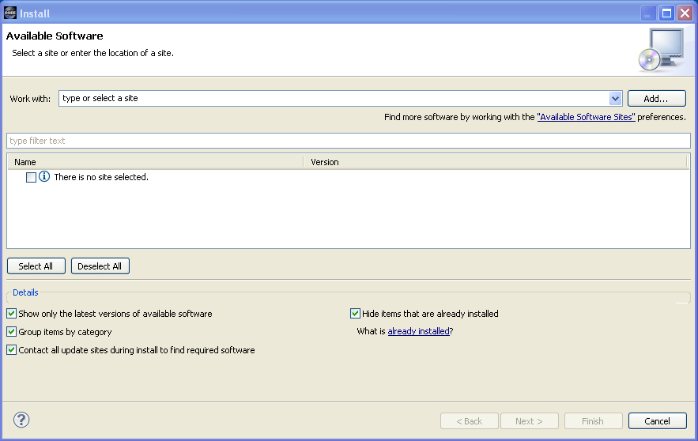
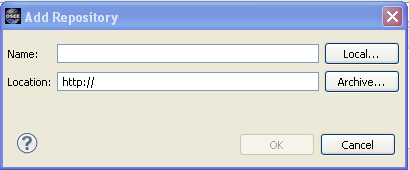
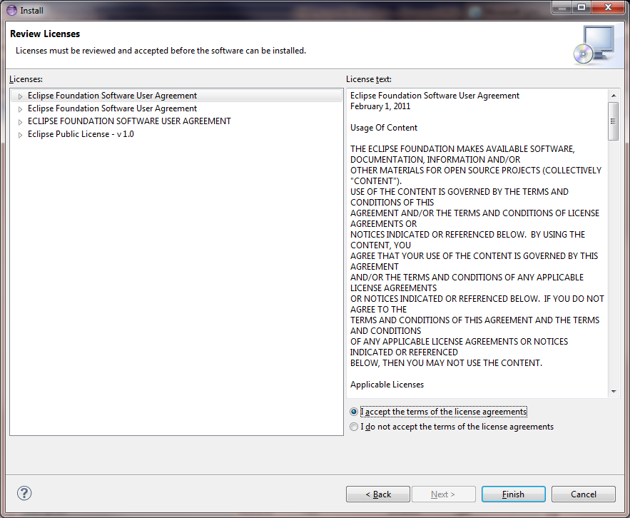

| Installation and Initialization |

|
|

|
| Introduction |
|
Screencasts |
Installation and Initialization
Requirements
- System with at least 4GB of RAM
- Java Runtime Environment (JRE) 1.6
-
Eclipse Kepler 4.3.2
- Relational Databases: OSEE comes bundled with H2. For additional database support, see
Supported Databases.
Eclipse Installation
To install OSEE: Start by downloading the OSEE Application Server and the OSEE Client Update Archive from the
downloads page.
Quick Server Installation
If you are interested in a quick start, and are not setting up a custom database installation, setting up the OSEE server with the bundled HSQLDB database is simple.
- Create a directory to place your server in, and unzip the downloaded server zip file (e.g. org.eclipse.osee.server.runtime.zip) into that directory.
You should end up with the following files and directories:
- configuration
- demo
- eclipse
- etc
- plugins
- runDemo.bat
- runDemo.sh
- runHsql.sh
- runPostgreSqlLocal.sh
- Edit the desired startup script file (e.g. "runDemo.bat") to provide the server the link to the binary data.
For example, if you were using Windows, and you installed to C:/UserData/OseeDemo, you would change the line in the batch file to:
-
- Dosee.application.server.data="C:/UserData/OseeDemo/demo/binary_data"
- change to the etc directory, and edit the osee.hsql.json file.
Set the jdbc.server.db.data.path to the location of the hsql db.
Following the example above, for instance, you would change the line in the json file to:
- "jdbc.server.db.data.path": "file:c:/UserData/OseeDemo/demo/hsql/osee.hsql.db",
That completes the simple server setup.
Run the server by setting up a command window, then running the script file to start the server.
For example, if you were running with Windows, you would start a windows command shell, then run the "runDemo.bat" batch script. See
Launch Application Server for details on running the server.
Client Installation
The OSEE client can be installed from within Eclipse like any other Eclipse plugin.
- Start Eclipse and select the menu item
Help > Install New Software...
- Select the
Available Software tab group and click the
Add... button.


- In the
Add Repository dialog, choose the Archive button, then navigate the file browser to the Client Update file downloaded in step one.
Please note that the use of the software you are about to access may be subject to third party terms and conditions and you are responsible for abiding by such terms and conditions.
- Click on the
OK button to store update site information.
- Select the OSEE update site entry and all features listed under its category. Click the
Next button.

- The update manager calculates dependencies and offers you a list of features to install. Select the needed ones and click the
Next button.
- Accept terms of license agreement and click the
Finish button in order to start the installation of selected features.

- To apply installation changes click on the
No button and shutdown Eclipse. It is important that you don't restart Eclipse until you have completed the database initialization steps below.
 If you are using the default demo database and did the server quick start above, you just need to make one change to the eclipse eclipse.ini file - add the line
If you are using the default demo database and did the server quick start above, you just need to make one change to the eclipse eclipse.ini file - add the line
Your installation is complete.
- If you chose the quick server installation above, you can check to make sure the server is running in the command window, then start the OSEE client.
- If you are using a custom database, then configure the database and initialize it before running the client.
Additional Configuration Options
- The following instructions apply if you are setting up a custom database, or if you are configuring OSEE for use by multiple users.
- Custom Data Base: Follow the instructions at
Supported Databases to complete this step.
- Initialize the database with default OSEE data. See
Database Initialization
- Setup config.ini and launch eclipse to start using OSEE
Launch and Configuration
- You can find different OSEE perspectives, such as Define and ATS, and views in correspondent dialogs, activated by menu items
Window > Open Perspective > Other... and
Window > Show View > Other....
Server Installation
- Download the server zip file from
downloads.
- Unzip the file
- Set up the database (as described below)
Supported Databases
Data created and managed by OSEE is persisted into a data store divided into two sections. A relational database to store type, configuration, and small content (< 4000 bytes) and a remote file system to store larger binary content.
Before you can use OSEE, you will need to select and install a relational database suited for your needs and identify a file system path for binary content storage. OSEE provides support for the databases listed below. For launch and configuration instructions visit
Launch and Configuration.
PostgreSQL Installation
Prerequisites
- Ensure you have selected the best database for your needs
Instructions
- Download PostgreSQL from
http://www.postgresql.org/download
- Follow PostgreSQL installation instructions
- By default, the PostgreSQL database server is configured to allow only local connections. If remote connections are to be allowed, edit postgresql.conf and pg_hba.conf to set the necessary permissions. (To setup an unsecured database instance set listen_address to * in the postgresql.conf file and add the following line to the pg_hba.conf file: host all all 0.0.0.0/0 trust)
- Configure PostgreSQL for OSEE
- Launch pgAdmin (in windows Start->All Programs->PostgreSQL*->pgAdmin III)
- Double click on PostgreSQL Database Server (listed under Servers on the left hand side)
- If you are prompted for a password type the password selected during installation (user should be postgres by default)
- Create an "osee" user
- Right-click on Login Roles (at the bottom of the tree on the left hand side) and select "New Login Role..."
- Enter the following in the dialog:
- Role Name: osee
- "Can login" should be checked
- Password: osee
- Password (again): osee
- Role Privileges--select all of the following:
- Inherits rights from parent roles
- Superuser
- Can create database objects
- Can modify catalog directly
- Click 'OK'
- You should now have an "osee" user under Login Roles
- Expand the "Databases" item in the tree
- Create the "OSEE" database by right-clicking on "Databases" and selecting "New Database..."
- Enter the following in the dialog:
- Name: OSEE
- Owner: osee
- Encoding: UTF-8
- Click 'OK'
- You should now have an "OSEE" Database under Databases
- Click on "OSEE" and then expand it, then expand "Schemas"
- Create the "osee" schema:
- Right click on "Schemas" and select "New Schema..."
- Enter the following in the dialog:
- Name: osee
- Owner: osee
- Click 'OK'
- You should now have an "osee" schema under schemas
- The relational database is now configured. Proceed to OSEE Database Initialization
Launch Application Server
Prerequisites
- Database has been installed
Instructions
- Execute the launch script for your database and OS (if running from microdoc:
http://osee.microdoc.com/node/2) - typical launch script names are
runPostgresqlLocal.sh for a local Postgres on Unix and
runH2.sh for H2 on Unix. It is straightforward to convert the downloaded scripts to Windows batch files.
- If running PostgreSQL, be sure to add the driver bundle (
downloads) to the server installation. Unzip the files into the server installation and add org.postgresql.driver@start to the bundles in config.ini.
- Wait until server finishes the startup procedure -
do not close the console
- To check that the server has connected successfully to the database, enter the command osgi> osee server_status
- You should see results similar to:
File:ServerStatus.jpg
Database Initialization
Prerequisites
Visit the 'User's Guide' if you need more information about any of the pre-requisites below.
- Database has been installed
- Database server is running
- A file system path has been selected for binary data storage. The system default the user's home directory.
- An application server is running. See 'Application Server Launch' for more info.
'
'Warning: This process will delete all data from OSEE Data Store. Make sure you are certain before running this process.''
Instructions
- Ensure database connection information matches database installation. OSEE is pre-configured to work with a PostgreSQL server running on port 5432. If you need a specialized database connection see the 'Configuring Database Connection' section.
- If using PostgreSQL, make sure the driver bundle has been installed on the client eclipse (available at
downloads).
- The zip file can be dragged and dropped on the install new software window.
- Uncheck the "Group items by category" for it to show up.
- In a console from the client installation, launch the database initialization application by entering the following:
- When prompted select "Y"
- Wait for initialization to complete
Messaging Service
OSEE utilizes the
Java Message Service (JMS) API for loosely coupled, reliable, and asynchronous communication with OSEE clients. You will need an implementation of this API such as
ActiveMQ in order for clients to receive updates to cached artifacts that were modified by another client (remote events). Download the latest version from
here.
Install
General installation
instructions.
If you are downloading a release of ActiveMQ from the terminal and need to use an http proxy, this command will set up your proxy:
$ export http_proxy=http://proxy.host.com:1234
Start
General instructions on how to start ActiveMQ are
here.
To direct the OSEE client to use this service, in your launcher ini file, include the following Java system property:
-Dosee.default.broker.uri=tcp://<localhost_or_your_server>:61616
Launch & Configuration
Before you can launch OSEE, you will need the address of an arbitration server or an application server to access the OSEE data store. If you have questions regarding client/server interactions, visit 'Client/Server Overview'. If everything is on the same machine, the following examples will work.
Prerequisites
- Database has been installed
- Database server is running
- A file system path has been selected for binary data storage. The system default the user's home directory.
Application Server Launch Instructions
For PostgreSQL:
OSEE Client Launch Instructions
- Create baseline branch
- From the Branch Manager's select parent branch -> open context menu -> select "branch" and enter new branch name
- From the Branch Manager's select new branch -> open context menu -> access control
- Add system administrators with Full Access
- Add Everyone with Read Access